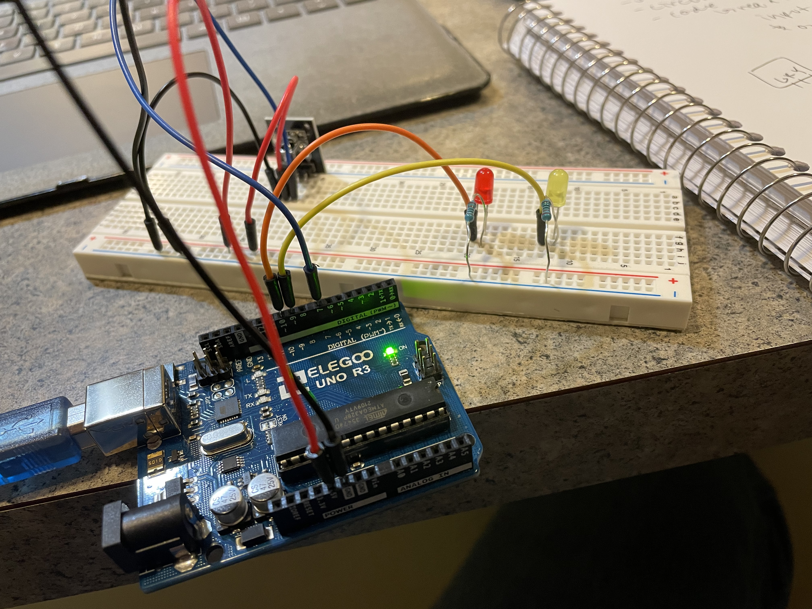
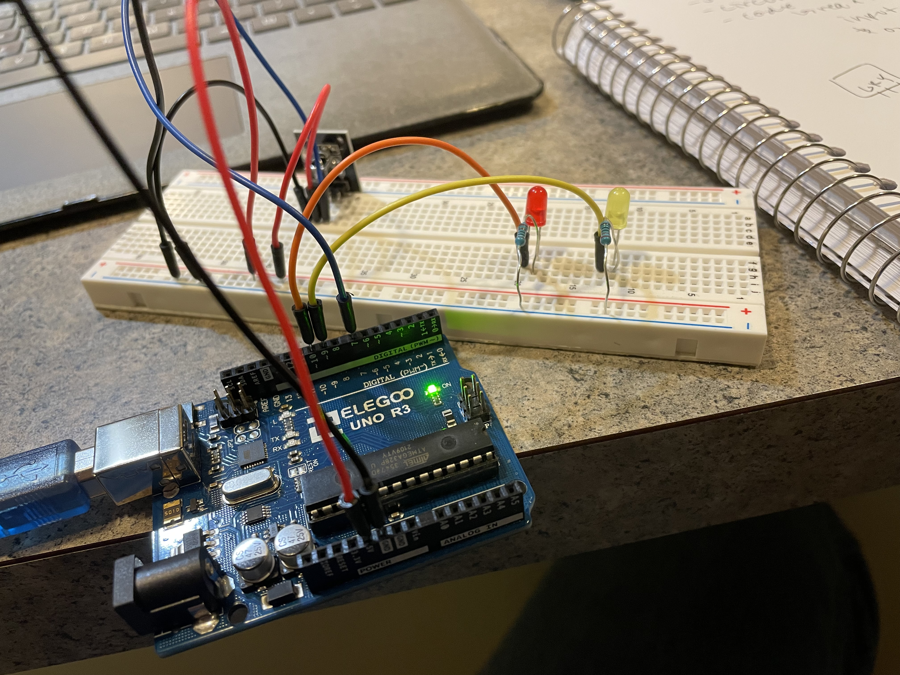
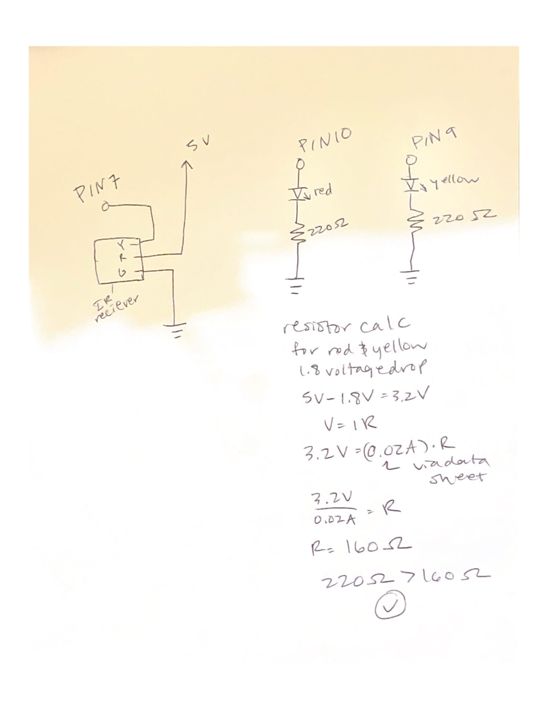

Alissa Acheson's Assignment 4!
 

Above is the circuit that contains the IR reciever module and two LEDs, one red and one yellow, they each have a 220 ohm resistor. Not pictured is the IR remote that communicates with the IR receiver module.

Above is the calculations for the type of resistor, 220, used and the schematic of the circuits used.
Below is the Ardunio code that the board is using, fading the LEDs on and off red when 5 is pressed and yellow when 2 is pressed. They stay on for 1 second then turn off.
/*
* This code references this example
* https://www.circuitbasics.com/arduino-ir-remote-receiver-tutorial/
* and adds the fading on of the LEDs
*
*/
//calls the library IRremote
#include
//sets which pin the reciver is connected to
const int RECV_PIN = 7;
//tells the arduino which pin the IRrecv is connected to
IRrecv irrecv(RECV_PIN);
//defines a variable "results" of type decode_results
decode_results results;
//sets the pins that the two LEDs are connected to
const int redPin = 10;
const int yellowPin = 9;
void setup(){
// Start the receiver
irrecv.enableIRIn();
//tells the IRrecv object to flash the LED on and off when an IR signal is received.
irrecv.blink13(true);
//sets the pin 10 connected to red as an output
pinMode(redPin, OUTPUT);
//sets the pin 11 connected to yellow as an output
pinMode(yellowPin, OUTPUT);
}
void loop(){
//using the function of decode, looks at variable "results"
if (irrecv.decode(&results)){
//accesses the part of results variable called value
switch(results.value){
//if the value reads as this case
case 0xFF38C7: //Keypad button "5"
//turn on red pin via fade
for (int fadeValue = 0 ; fadeValue <= 255; fadeValue += 20) {
// sets the value (range from 0 to 255):
analogWrite(redPin, fadeValue);
//wait 30 milliseconds to see fade
delay(30);
}
//wait 1 second
delay(1000);
//turn red pin off
digitalWrite(redPin, LOW);
}
//accesses the part of results variable called value
switch(results.value){
//if the value reads as this case
case 0xFF18E7: //Keypad button "2"
//turn on yellow pin via fade
for (int fadeValue = 0 ; fadeValue <= 255; fadeValue += 20) {
// sets the value (range from 0 to 255):
analogWrite(yellowPin, fadeValue);
//wait 30 milliseconds to see fade
delay(30);
}
//wait 1 second
delay(1000);
//turn yellow pin off
digitalWrite(yellowPin, LOW);
}
//recieve next value
irrecv.resume();
}
}
Below is the final operation, the gif shows the 5 button being pressed on the IR remote, the red LED fading on, staying on for 1 second then turning off. Then the 2 button is pressed and the yellow LED fades on, stays on for 1 second then turns off.